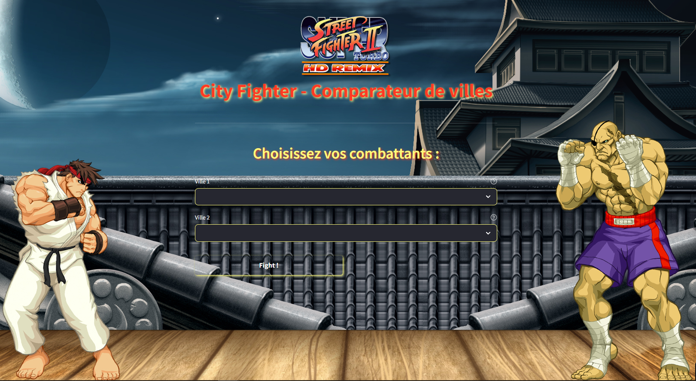

Introduction :
Le projet
"City Fighting" vise à créer une interface web permettant la comparaison de deux villes sur différents aspects socio-économiques et culturels. L'objectif est de fournir aux utilisateurs une plateforme interactive et intuitive pour les aider à prendre des décisions basées sur des données objectives. Ce rapport détaille les différentes étapes de développement de l'application ainsi que les sources de données utilisées.
1. Développement de l'Application Web :
L'application web a été développée en utilisant Streamlit, une bibliothèque Python qui simplifie considérablement le processus de création d'applications web interactives. Streamlit offre une approche conviviale et orientée données, ce qui en fait un choix idéal pour ce projet, qui repose principalement sur la manipulation et la visualisation de données.
Les fonctionnalités principales de l'application incluent :
- Sélection de deux villes pour la comparaison.
- Affichage des données générales, emploi, logement et météo pour chaque ville.
- Intégration de données complémentaires telles que la culture, le tourisme, la formation, les sports, etc.
- Visualisation des données à l'aide de graphiques, de cartes et de tableaux interactifs.
- Possibilité d'ajouter des critères personnalisés pour une comparaison plus approfondie.
2. Sources de Données :
Pour alimenter l'application en données pertinentes, plusieurs sources ont été utilisées, notamment :
Fichiers téléchargeables de l'INSEE et d'autres sources d'open data fournissant des données démographiques, socio-économiques et climatiques.
Utilisation d'API telles que Wikipedia, Pôle Emploi, et d'autres sources pour obtenir des informations sur la culture, le tourisme, l'emploi, etc.
Exploration d'autres sources de données disponibles en ligne pour couvrir un large éventail d'aspects pour chaque ville.
3. Données Obligatoires et Complémentaires :
Les données obligatoires incluent des informations générales sur les villes, l'emploi, le logement et la météo, tandis que les données complémentaires couvrent des domaines tels que la culture, le tourisme, la formation, les sports, l'activité sur les réseaux sociaux, etc.
Conclusion :
Le projet "City Fighting" a abouti à la création d'une interface web robuste permettant une comparaison détaillée de deux villes sur divers aspects. En utilisant des sources de données variées et fiables, l'application fournit aux utilisateurs des informations précieuses pour les aider dans leurs décisions. Des efforts continus seront déployés pour améliorer l'application, notamment en ajoutant de nouvelles fonctionnalités et en mettant à jour les données régulièrement pour assurer leur pertinence.
Images du projets :
